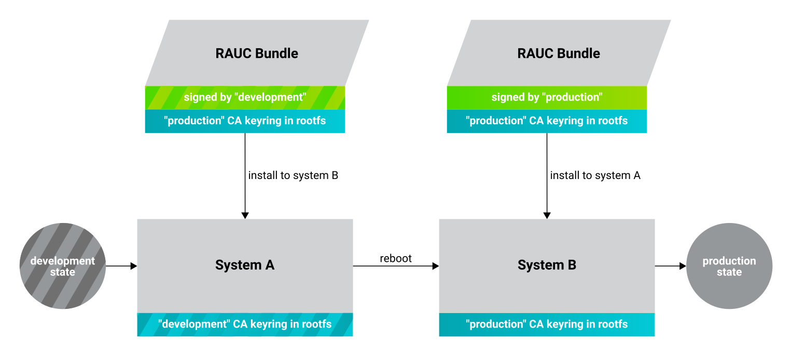

Documentation in pdf format: Download
RAUC Update & Device Management Manual |
|
|---|---|
Document Title |
RAUC Update & Device Management Manual Scarthgap |
Document Type |
RAUC Update & Device Management Manual |
Last Modified |
2025-02-10 |
Is Branch of |
RAUC Update & Device Management Manual |
Compatible BSPs |
BSP Release Type |
BSP Release Date |
BSP Status |
|---|---|---|---|
BSP-Yocto-Ampliphy-i.MX8MP-PD24.1.0 |
Major |
2024-04-02 |
released |
BSP-Yocto-Ampliphy-i.MX8MP-PD24.1.1 |
Minor |
2024-04-09 |
released |
BSP-Yocto-Ampliphy-i.MX8MP-PD24.1.2 |
Minor |
2024-06-26 |
released |
BSP-Yocto-NXP-i.MX8MP-PD24.1.0 |
Major |
2024-11-07 |
released |
BSP-Yocto-NXP-i.MX93-PD24.2.0 |
Major |
2024-10-08 |
released |
BSP-Yocto-Ampliphy-i.MX6UL-PD24.1.0 |
Major |
2024-07-19 |
released |
BSP-Yocto-Ampliphy-AM62Ax-PD24.1.0 |
Major |
2024-06-27 |
released |
BSP-Yocto-Ampliphy-AM62x-PD24.1.0 |
Major |
2024-06-27 |
released |
BSP-Yocto-Ampliphy-AM64x-PD24.1.0 |
Major |
2024-06-27 |
released |
This manual was tested using the Yocto version Scarthgap.
1. Introduction
PHYTEC’s Yocto distribution Ampliphy (former Yogurt) supports the RAUC (Robust Auto-Update Controller) mechanism. RAUC controls the procedure of updating a device with new firmware. This includes updating the Linux kernel, Device Tree, and root filesystem. For eMMC devices only, it can also update the bootloader.
This manual describes how RAUC is used and implemented on various PHYTEC platforms. Note, that different modules use different bootloaders and flash storage devices, which affects the way things are handled by RAUC. Make sure to read the correct sections fitting your platform.
Note
This manual contains machine-specific paths and variable contents. Make sure you are using the correct machine and device names for your application when executing any commands.
2. System Configuration
RAUC can be used with both eMMC and NAND flash storage. Using the distro
ampliphy-rauc or ampliphy-vendor-rauc, it is enabled by default and
requires no additional setup to get started. RAUC can be used in different
update scenarios. As an example, we configured the BSP to use an A/B setup to
have a completely redundant system (including the bootloader on eMMC devices).
Note, that there is an additional partition named config storing persistent
configuration data not being changed when updating.
2.1. RAUC BSP Example Setup
The partition layout is defined in the /etc/rauc/system.conf file. As an
example, this is what it looks like for i.MX 8M Plus with eMMC flash storage:
[system]
compatible=phyboard-pollux-imx8mp-3
bootloader=uboot
mountprefix=/mnt/rauc
data-directory=/mnt/config/rauc/
[handlers]
pre-install=/usr/lib/rauc/rauc-pre-install.sh
post-install=/usr/lib/rauc/rauc-post-install.sh
[keyring]
path=mainca-rsa.crt.pem
# Bootloader
[slot.bootloader.0]
device=/dev/mmcblk2
type=boot-emmc
# System A
[slot.rootfs.0]
device=/dev/mmcblk2p5
type=ext4
bootname=system0
resize=true
[slot.boot.0]
device=/dev/mmcblk2p1
type=vfat
parent=rootfs.0
# System B
[slot.rootfs.1]
device=/dev/mmcblk2p6
type=ext4
bootname=system1
resize=true
[slot.boot.1]
device=/dev/mmcblk2p2
type=vfat
parent=rootfs.1
Note, that the devices specified in the slots are different depending on the selected machine.
Warning
Updates with RAUC use an OpenSSL certificate to verify the validity of an image. The BSP includes a certificate that can be used for development. In a productive system, however, it is highly recommended to use a self-created key and certificate. If you need to change the keyring on an existing device, see Switching RAUC Keyrings for more information.
3. Design Considerations
In order to prevent the system from locking up, it may be a good idea to utilize a hardware watchdog. In case the Linux Kernel does not boot or another catastrophic event occurs that prevents the system from operating normally, the hardware watchdog then resets the system. By default, the hardware watchdog is disabled. To enable it, refer to the corresponding BSP manual that fits your SoM.
Other important design considerations, as well as a checklist, can be found in the official RAUC documentation: https://rauc.readthedocs.io/en/latest/checklist.html
4. Initial Setup
To use RAUC, the flash device needs to be written with a complete Linux system and bootloader. The preferred method to do this is using the included tool partup.
4.1. Flash Storage
To flash the device with the correct partitions/volumes, use a partup package
built with the ampliphy-rauc or ampliphy-vendor-rauc distribution.
Prebuilt partup packages can be found in the BSP release. It is also possible to
build an image with this distribution yourself using Yocto. Separate build
directories are created, storing the images and packages for the RAUC system.
Initialize the build directory with the OE init script:
host:~$ source sources/poky/oe-init-build-env
Change the distribution to ampliphy-rauc (for i.MX6, AM6x, i.MX8
mainline BSP) or ampliphy-vendor-rauc (for i.MX8, i.MX9 vendor BSP):
DISTRO ?= "ampliphy-rauc"
Any image built with this distro now includes a full A/B system. Build the image as usual:
host:~$ bitbake phytec-headless-image
The resulting partup package is stored in the deploy-ampliphy-vendor-rauc
directory, e.g.:
deploy-ampliphy-vendor-rauc/images/phyboard-segin-imx93-2/phytec-headless-image-phyboard-segin-imx93-2.partup
This partup package contains all the necessary data and configuration to flash
an eMMC. Partup can be obtained from its
release page. Also, see its
README for detailed installation instructions. Partup is already installed
in our Ampliphy images, phytec-headless-image and can be directly used e.g.
from an SD card.
Note
To flash the initial RAUC system, a booted non-RAUC system is needed first on
a different flash device. E.g. you could boot a regular
phytec-headless-image image with distro ampliphy from an SD card.
4.1.1. eMMC
While running a non-RAUC system from an SD card on the target, copy the
.partup package built with distro ampliphy-rauc or
ampliphy-vendor-rauc to the running target first:
host:~$ scp phytec-headless-image-phyboard-segin-imx93-2.partup 192.168.3.11:/root
Then install the partup package to the eMMC:
target:~$ partup install phytec-headless-image-phyboard-segin-imx93-2.partup /dev/mmcblk0
Now the target can boot the flashed A/B system.
4.1.2. NAND
Note
There are scripts provided with the bootloader barebox that previously were
used to initialize NAND flash with an A/B system: rauc_init_nand,
rauc_flash_nand_from_tftp and rauc_flash_nand_from_mmc. These scripts
are deprecated. It is advised to use the script rauc-flash-nand provided
in the Linux environment with PHYTEC’s distribution Ampliphy.
With raw NAND flash the kernel, device tree, and root filesystem are written individually. Initialize the NAND flash with the correct volumes from a Linux on the target:
target:~$ rauc-flash-nand -k /path/to/zImage -d /path/to/oftree -r /path/to/root.ubifs
The initialization script will automatically utilize all available space of NAND
flash. The NAND device is also determined automatically by finding the device
root in /proc/mtd.
On i.MX6 and i.MX6UL devices with barebox, use bbu (barebox update) to flash the bootloader:
target:~$ bbu.sh -f /path/to/barebox.bin
The A/B system on NAND Flash is now ready to be booted.
4.2. Bootloader
4.2.1. Booting the A/B System by Default
Booting the A/B system is done mostly automatically by the bootloader since the
Yocto release hardknott. For devices with eMMC flash storage, the
corresponding setting is written into the bootloader environment during the
building of the BSP. In particular, if the distribution ampliphy-rauc or
ampliphy-vendor-rauc is used, as described previously, the bootloader should
automatically start the A/B system and have the variables set for RAUC
accordingly.
This automatic setting can be manually changed by setting one variable in the bootloader. The procedure is described in more detail in the following chapters for U-Boot and barebox.
4.2.2. U-Boot
After a successful boot into a Linux environment, this command is used to view the available parameters:
target:~$ fw_printenv
You may see this parameter along with others in the output:
doraucboot=1
To manually disable or enable booting the A/B system with RAUC, set this
variable to 0 or 1:
target:~$ fw_setenv doraucboot 1
This parameter can also be edited in U-Boot. Restart your board and hit any key to stop the automatic boot. The environment variables can now be viewed:
u-boot=> printenv
and set:
u-boot=> setenv doraucboot 1
u-boot=> saveenv
4.2.3. Barebox
In barebox, the system to be booted can be selected directly by its name. To
boot the A/B system, including RAUC, bootchooser is used. To boot e.g. a
regular SD card without RAUC use mmc instead, or nand for NAND devices:
barebox$ nv boot.default=bootchooser
5. Creating RAUC Bundles
To update your system with RAUC, a RAUC bundle (.raucb) needs to be created.
It contains all required images and scripts for the update and a RAUC
manifest.raucm that describes the content of the bundle for the RAUC update
on the target. The BSP includes a Yocto target that lets you build a RAUC bundle
from your Yocto build.
To create the bundle with Yocto, run the following in build/ with the
distribution ampliphy-rauc or ampliphy-vendor-rauc set up, as described
previously:
host:~$ bitbake phytec-headless-bundle
This results in the creation of a .raucb bundle file in
deploy/images/<MACHINE>/ which can be used for updating the system as
described later. There is no need to create a manifest.raucm manually, as it
is created automatically during the build of the bundle. As a reference, the
created manifest would look something like this:
[update]
compatible=phyboard-polis-imx8mm-3
version=r0
description=PHYTEC rauc bundle based on BSP-Yocto-FSL-i.MX8MM-PD20.1.0
build=20200624074335
[image.rootfs]
sha256=cc3f65cd1c1993951d7a39bdb7b7d723617ac46460f8b640cd8d1622ad6e4c17
size=99942000
filename=phytec-headless-image-phyboard-polis-imx8mm-3.tar.gz
[image.boot]
sha256=bafe46679af8c6292dba22b9d402e3119ef78c6f8b458bcb6993326060de3aa4
size=12410534
filename=boot.tar.gz.img
For more information about the manifest format, see https://rauc.readthedocs.io/en/latest/reference.html#manifest.
5.1. Creating transition bundles
Updating to a new major release can require a special RAUC bundle.
When updating to a Scarthgap based release from an older version, add the
following to your local.conf of the new release and rebuild the RAUC bundle:
RAUC_IMAGE_FSTYPE = "tar.gz"
RAUC_SLOT_rootfs[adaptive] = ""
After successfully migrating your system with the rebuilt bundle, revert these settings for any further bundle updates.
6. Updating with RAUC
To update the target system with RAUC, the RAUC bundle file previously created
first needs to be copied to the board or to a memory device that can be mounted
in Linux. One way is to copy the bundle file with scp, but this requires
enough space left on the board’s filesystem. To do this, boot the target board
to Linux and connect it via Ethernet to your host PC.
On the host, run:
host:~$ scp phytec-headless-bundle-phyboard-polis-imx8mm-3.raucb root@192.168.3.11:/tmp/
On the target, the bundle can be verified:
target:~$ rauc info /tmp/phytec-headless-bundle-phyboard-polis-imx8mm-3.raucb
and the output should look similar to this:
rauc-Message: 12:52:49.821: Reading bundle: /phytec-headless-bundle-phyboard-polis-imx8mm-3.raucb
rauc-Message: 12:52:49.830: Verifying bundle...
Compatible: 'phyboard-polis-imx8mm-3'
Version: 'r0'
Description: 'PHYTEC rauc bundle based on BSP-Yocto-FSL-i.MX8MM-PD20.1.0'
Build: '20200624073212'
Hooks: ''
2 Images:
(1) phytec-headless-image-phyboard-polis-imx8mm-3.tar.gz
Slotclass: rootfs
Checksum: 342f67f7678d7af3f77710e1b68979f638c7f4d20393f6ffd0c36beff2789070
Size: 180407809
Hooks:
(2) boot.tar.gz.img
Slotclass: boot
Checksum: 8c84465b4715cc142eca2785fea09804bd970755142c9ff57e08c791e2b71f28
Size: 12411786
Hooks:
0 Files
Certificate Chain:
0 Subject: /O=PHYTEC Messtechnik GmbH/CN=PHYTEC Messtechnik GmbH Development-1
Issuer: /O=PHYTEC Messtechnik GmbH/CN=PHYTEC Messtechnik GmbH PHYTEC BSP CA Development
SPKI sha256: E2:47:5F:32:05:37:04:D4:8C:48:8D:A6:74:A8:21:2E:97:41:EE:88:74:B5:F4:65:75:97:76:1D:FF:1D:7B:EE
Not Before: Jan 1 00:00:00 1970 GMT
Not After: Dec 31 23:59:59 9999 GMT
1 Subject: /O=PHYTEC Messtechnik GmbH/CN=PHYTEC Messtechnik GmbH PHYTEC BSP CA Development
Issuer: /O=PHYTEC Messtechnik GmbH/CN=PHYTEC Messtechnik GmbH PHYTEC BSP CA Development
SPKI sha256: AB:5C:DB:C6:0A:ED:A4:48:B9:40:AC:B1:48:06:AA:BA:92:09:83:8C:DC:6F:E1:5F:B6:FB:0C:39:3C:3B:E6:A2
Not Before: Jan 1 00:00:00 1970 GMT
Not After: Dec 31 23:59:59 9999 GMT
To check the current state of the system, run:
target:~$ rauc status
and get output similar to this:
=== System Info ===
Compatible: phyboard-segin-imx6ul-6
Variant:
Booted from: rootfs.0 (system0)
=== Bootloader ===
Activated: rootfs.0 (system0)
=== Slot States ===
o [rootfs.1] (/dev/ubi0_6, ubifs, inactive)
bootname: system1
boot status: good
[dtb.1] (/dev/ubi0_3, ubivol, inactive)
[kernel.1] (/dev/ubi0_2, ubivol, inactive)
x [rootfs.0] (/dev/ubi0_5, ubifs, booted)
bootname: system0
boot status: good
[kernel.0] (/dev/ubi0_0, ubivol, active)
[dtb.0] (/dev/ubi0_1, ubivol, active)
To update the currently inactive system with the downloaded bundle, run:
target:~$ rauc install /tmp/phytec-headless-bundle-phyboard-polis-imx8mm-3.raucb
and reboot afterward:
target:~$ reboot
With the success of the update, RAUC automatically switches the active system to
the newly updated system. Now during reboot, RAUC counts the boot attempts of
the kernel and if it fails more often than specified in the state framework of
the system, RAUC switches back to the old system and marks the new system as
bad. If the boot attempt to the kernel is successful, the new system is marked
as good and the old system can now be updated with the same instructions. After
two successful rauc install and reboot, both systems are updated.
Tip
When you update from a USB stick, make sure to remove the stick after a successful update before rebooting. If not, an automatic update will be started after each boot. This is due to the Automatic Updates from USB Flash Drive with RAUC you can find below.
6.1. Changing the Active Boot Slot
It is possible to switch the active system manually:
target:~$ rauc status mark-active other
After a reboot, the target now starts from the other system.
7. Switching RAUC Keyrings
PHYTEC’s distribution comes with keys and certificates used for development and demonstration purposes only. To change to a different PKI when devices are already rolled out, RAUC’s keyring must be changed. This chapter describes the full procedure from a development state to a production state. Keep in mind, that it is always a better idea to roll out your devices with a production keyring in the first place, instead of relying on a development one for too long. The following diagram shows the general process of switching keyrings for RAUC:
7.1. Keyring Switching Process
Create new certificates and keys for your own PKI. See our security manual for a detailed description on how to create a custom PKI. For this document, we refer to this newly created PKI as “production”, as opposed to the existing “development” keys.
Move the generated keys and certificates, to your main Yocto build directory
root, alongside with build/ and sources/.
Warning
Be careful where you store the private keys! These should in no way be made publicly available. E.g. do not store the private keys in a public Git repository. Otherwise, unauthorized entities could create RAUC bundles that can be installed on your target system!
Now, a RAUC bundle must be created that contains the new “production” CA keyring
in its root filesystem but is still signed by the “development” CA. With this,
the system is converted from a “development” system to a “production” system. To
achieve this, exchange the file mainca-rsa.cert.pem installed by the RAUC
recipe in the Yocto sources. Create a file rauc-conf.bbappend in your own
Yocto layer:
FILESEXTRAPATHS_prepend := "${THISDIR}/files:"
RAUC_KEYRING_FILE = "${CERT_PATH}/rauc-customer/mainca-rsa.cert.pem"
Build the same RAUC bundle as before, now with the exchanged keyring:
host:~$ source source/poky/oe-init-build-env
host:~$ bitbake phytec-headless-bundle # Build the desired RAUC bundle
Install the resulting RAUC bundle as usual. The target now has the image with the “production” keyring installed in its other slot (“System B” in the figure above). Reboot to start that system.
All future RAUC bundles for the “production” system must now also be signed by the “production” CA. For this, change the key and certificate to your newly generated “production” ones in the bundle recipe:
require phytec-base-bundle.inc
RAUC_SLOT_rootfs ?= "phytec-headless-image"
RAUC_KEY_FILE = "${CERT_PATH}/rauc-customer/private/production-1.key.pem"
RAUC_CERT_FILE = "${CERT_PATH/rauc-customer/production-1.cert.pem"
RAUC_INTERMEDIATE_CERT_FILE = ""
Rebuild the RAUC bundle:
host:~$ bitbake customer-headless-bundle
These and any future bundles are now ready to be installed on your “production” target system and have been fully migrated away from the “development” system. This also means that now only bundles signed by the “production” CA can be installed on the target (and e.g. “development” bundles cannot).
8. Use Case Examples
8.1. Automatic Updates from USB Flash Drive with RAUC
One of the most prominent use cases for RAUC might be an automatic update system from a USB flash drive. This use case is implemented in the BSP as a reference example. We combine only standard Linux mechanisms with RAUC to build the system. The kernel notifies udev when a device gets plugged into the USB port. We use a custom udev rule to trigger a systemd service when this event happens.
KERNEL!="sd[a-z][0-9]", GOTO="media_by_label_auto_mount_end"
# Trigger systemd service
ACTION=="add", TAG+="systemd", ENV{SYSTEMD_WANTS}="update-usb@%k.service"
# Exit
LABEL="media_by_label_auto_mount_end"
The service automatically mounts the USB flash drive and notifies the application.
[Unit]
Description=usb media RAUC service
After=multi-user.target
Requires=rauc.service
[Service]
Type=oneshot
Environment=DBUS_SESSION_BUS_ADDRESS=unix:path=/run/dbus/system_bus_socket
ExecStartPre=/bin/mkdir -p /media/%I
ExecStartPre=/bin/mount -t auto /dev/%I /media/%I
ExecStart=/usr/bin/update_usb.sh %I
ExecStop=/bin/umount -l /media/%i
ExecStopPost=-/bin/rmdir /media/%I
In our reference implementation, we simply use a shell script for the application logic.
#!/bin/sh
MOUNT=/media/$1
NUMRAUCM=$(find ${MOUNT}/*.raucb -maxdepth 0 | wc -l)
[ "$NUMRAUCM" -eq 0 ] && echo "${MOUNT}*.raucb not found" && exit
[ "$NUMRAUCM" -ne 1 ] && echo "more than one ${MOUNT}/*.raucb" && exit
rauc install $MOUNT/*.raucb
if [ "$?" -ne 0 ]; then
echo "Failed to install RAUC bundle."
else
echo "Update successful."
fi
exit $?
The update logic can be integrated into an application using the systemd D-Bus API. RAUC does not need to be called by its command-line interface but can be integrated with D-Bus.
Tip
RAUC features a D-Bus API interface (see https://rauc.readthedocs.io/en/latest/using.html#using-the-d-bus-api).
8.2. Security Measurement: Downgrade Barrier
As a second reference example, we will implement a security mechanism: a downgrade barrier. When you detect a security vulnerability on your system, you will fix it and update your system. The systems with the new software will now be secure again. If an attacker gets a hold of the old software update bundle, which still has a valid signature, the attacker might have the possibility to install the old software and still take advantage of the previously fixed security vulnerability. To prevent this from happening, you could revoke the updated certificate for every single update and create a new one. This might be difficult to handle, depending on the environment. A simpler solution would be to allow updates only in one direction using a version check.
#!/bin/sh
VERSION_FILE=/etc/rauc/downgrade_barrier_version
MANIFEST_FILE=${RAUC_UPDATE_SOURCE}/manifest.raucm
[ ! -f ${VERSION_FILE} ] && exit 1
[ ! -f ${MANIFEST_FILE} ] && exit 2
VERSION=`cat ${VERSION_FILE} | cut -d 'r' -f 2`
BUNDLE_VERSION=`grep "version" -rI ${MANIFEST_FILE} | cut -d 'r' -f 3`
# check from empty or unset variables
[ -z "${VERSION}" ] && exit 3
[ -z "${BUNDLE_VERSION}" ] && exit 4
# developer mode, allow all updates if version is r0
#[ ${VERSION} -eq 0 ] && exit 0
# downgrade barrier
if [ ${VERSION} -gt ${BUNDLE_VERSION} ]; then
echo "Downgrade barrier blocked rauc update! CODE5\n"
else
exit 0
fi
exit 5
The script is installed on the target but it is not activated. You need to remove the developer mode line in the script to activate it.
8.3. Streaming Bundles over HTTP
Instead of copying the bundle to the device, the bundle can be streamed over HTTP. Using bundle streaming has the advantage of not requiring local storage on the target. A simple approach to this is running NGINX inside a Docker container. The following example shows how to implement a minimal download server enabling HTTP range requests to support this feature.
Create a Dockerfile with the following content:
FROM nginx
COPY bundles /bundles
COPY nginx.conf /etc/nginx/nginx.conf
Configure NGINX to enable HTTP range requests and point it to the bundle file.
events {}
http {
server {
proxy_force_ranges on;
location / {
root /bundles;
}
}
}
Place a bundle in the bundles sub-directory. The folder structure looks like
the following after creating all configuration files:
user@host:rauc-bundle-streaming$ find
.
./bundles
./bundles/phytec-headless-bundle-phyboard-polis-imx8mn-1.raucb
./nginx.conf
./Dockerfile
Build and run the docker container on the host system:
host:~$ sudo docker build -t rauc-bundle-streaming .
host:~$ sudo docker run --name bundles -p 80:80 -d rauc-bundle-streaming
Install the bundle on the currently inactive target partitions:
target:~$ rauc install http://192.168.3.10/phytec-headless-bundle-phyboard-polis-imx8mn-1.raucb
Note
After the update finishes the target may display the following error which has no impact on the success of the update:
[ 7416.336609] block nbd0: NBD_DISCONNECT
[ 7416.340413] block nbd0: Send disconnect failed -32
8.4. Adaptive Updates and HTTP Streaming
RAUC supports updating only the differences between installed versions. This is most commonly known as “delta updates” in other update clients. However, with RAUC, no intermediate updates are necessary for this process to work. The RAUC client automatically selects and install only the needed data from any newer update bundle. This distinguishes RAUC’s “adaptive updates” from the traditional “delta updates”. Read more about adaptive updates in the official RAUC documentation: https://rauc.readthedocs.io/en/latest/advanced.html#adaptive-updates
By default, PHYTEC images and bundles built with the Yocto distro
ampliphy-rauc and ampliphy-vendor-rauc support RAUC adaptive updates.
Together with Streaming Bundles over HTTP, adaptive updates allow for only downloading necessary data needed for an update. See the following link for the official RAUC documentation: https://rauc.readthedocs.io/en/latest/advanced.html#http-streaming
9. Reference
9.1. Boot Logic Implementation
Tip
The implementation details described in this chapter serve as a reference guide. PHYTEC BSPs that have RAUC support include these by default and the changes are already incorporated.
9.1.1. U-Boot Environment Variables
For U-Boot, the boot logic that selects the correct partitions to boot from is implemented in its environment. As a reference, these are the most important U-Boot variables that are used for the A/B system with RAUC:
Name |
Function |
|---|---|
BOOT_ORDER |
Contains a space-separated list of boot targets in the order they should be tried. This parameter is automatically set by RAUC. |
BOOT_<slot>_LEFT |
Contains the number of remaining boot attempts to perform for the respective slot. This parameter is automatically set by RAUC. |
|
Contains the boot logic that sets the partitions so the correct system is loaded. |
|
Enables booting the A/B system if set to 1 and disables it if set to 0. |
|
Sets the Kernel bootargs like console, root, and RAUC slot. |
|
Sets the root filesystem partitions of the device. |
|
Sets the boot partitions of the device. |
These environment variables are defined in include/env/phytec/rauc.env in
the u-boot source code.
Note
A change in the partition layout, e.g. when using an additional data
partition, may require changing the variables raucrootpart and
raucbootpart. Make sure to rebuild your image with the new bootloader
environment after you have made the appropriate changes.
9.1.2. Barebox Bootchooser Framework
For the barebox, the boot logic that selects the correct partitions to boot from is implemented using the bootchooser and state framework. See the barebox documentation for detailed information about these: Barebox Bootchooser Framework, Barebox State Framework.
First, the state framework configuration needs to be added to the barebox device tree. Check out the BSP Customization chapter in the Yocto reference manual. The state framework configuration is already included with our BSP for the supported SoC and can be directly included in the main barebox device tree. E.g. for i.MX6 based module:
#include "imx6qdl-phytec-state.dtsi"
Afterward, rebuild the image and flash the new bootloader.
Warning
Be aware that by adding the state framework configuration, the first 160 bytes of the EEPROM are occupied and can no longer be used for user-specific purposes.
The following device tree snippet shows an example of the state framework configuration used with the BSP. As can be seen, the EEPROM is used as a backend for the state information:
/ {
aliases {
state = &state;
};
state: imx6qdl_phytec_boot_state {
magic = <0x883b86a6>;
compatible = "barebox,state";
backend-type = "raw";
backend = <&backend_update_eeprom>;
backend-stridesize = <54>;
#address-cells = <1>;
#size-cells = <1>;
bootstate {
#address-cells = <1>;
#size-cells = <1>;
last_chosen {
reg = <0x0 0x4>;
type = "uint32";
};
system0 {
#address-cells = <1>;
#size-cells = <1>;
remaining_attempts {
reg = <0x4 0x4>;
type = "uint32";
default = <3>;
};
priority {
reg = <0x8 0x4>;
type = "uint32";
default = <21>;
};
ok {
reg = <0xc 0x4>;
type = "uint32";
default = <0>;
};
};
system1 {
#address-cells = <1>;
#size-cells = <1>;
remaining_attempts {
reg = <0x10 0x4>;
type = "uint32";
default = <3>;
};
priority {
reg = <0x14 0x4>;
type = "uint32";
default = <20>;
};
ok {
reg = <0x18 0x4>;
type = "uint32";
default = <0>;
};
};
};
};
};
&eeprom {
status = "okay";
partitions {
compatible = "fixed-partitions";
#size-cells = <1>;
#address-cells = <1>;
backend_update_eeprom: state@0 {
reg = <0x0 0x100>;
label = "update-eeprom";
};
};
};
To be able to boot from two systems alternately, the bootchooser needs to be aware of the state framework configuration. For each system, a boot script is required. For a system with NAND flash, the boot script of the first system may look like the following:
#!/bin/sh
[ -e /env/config-expansions ] && /env/config-expansions
[ ! -e /dev/nand0.root.ubi ] && ubiattach /dev/nand0.root
global.bootm.image="/dev/nand0.root.ubi.kernel0"
global.bootm.oftree="/dev/nand0.root.ubi.oftree0"
global.linux.bootargs.dyn.root="root=ubi0:root0 ubi.mtd=root rootfstype=ubifs"
The second boot script has the same structure but uses the partitions containing the second system. Machines with eMMC flash use similar boot scripts, albeit the mounting and boot arguments look different.
Run the following commands to create the required bootchooser non-volatile environment variables:
barebox$ nv bootchooser.state_prefix=state.bootstate
barebox$ nv bootchooser.system0.boot=system0
barebox$ nv bootchooser.system1.boot=system1
barebox$ nv bootchooser.targets="system0 system1"
9.2. eMMC Boot Partitions
With eMMC flash storage it is possible to use the dedicated boot partitions for redundantly storing the bootloader.
By default, bundles built with our BSP (e.g. phytec-headless-bundle) contain
the bootloader for updating eMMC boot partitions accordingly.
Note, that the U-Boot environment still resides in the user area before the first partition. The user area also still contains the bootloader which the image first shipped during its initialization process.
To manually write the bootloader to the eMMC boot partitions, first disable the write protection:
target:~$ echo 0 > /sys/block/mmcblk2boot0/force_ro
target:~$ echo 0 > /sys/block/mmcblk2boot1/force_ro
Write the bootloader to the eMMC boot partitions:
target:~$ dd if=imx-boot of=/dev/mmcblk2boot0 bs=1k seek=33
target:~$ dd if=imx-boot of=/dev/mmcblk2boot1 bs=1k seek=33
This example is valid for the i.MX 8M Mini SoC. Note, that other SoCs may have different bootloader files and require different offsets where the bootloader is expected, specified by the seek parameter. See the following table for the different offsets being required by each SoC:
SoC |
Offset User Area |
Offset Boot Partition |
eMMC Device |
Bootloader |
|---|---|---|---|---|
i.MX 6 |
1 kiB |
0 kiB |
/dev/mmcblk3 |
barebox.bin |
i.MX 6UL |
1 kiB |
0 kiB |
/dev/mmcblk1 |
barebox.bin |
i.MX 8M |
33 kiB |
33 kiB |
/dev/mmcblk0 |
imx-boot |
i.MX 8M Mini |
33 kiB |
33 kiB |
/dev/mmcblk2 |
imx-boot |
i.MX 8M Nano |
32 kiB |
0 kiB |
/dev/mmcblk2 |
imx-boot |
i.MX 8M Plus |
32 kiB |
0 kiB |
/dev/mmcblk2 |
imx-boot |
i.MX 93 |
32 kiB |
0 kiB |
/dev/mmcblk0 |
imx-boot |
AM62x AM62Ax AM64x |
N/A |
0 kiB 512 kiB 2560 kiB |
/dev/mmcblk0 |
tiboot3.bin tispl.bin u-boot.img |
9.2.1. Bootloader Offsets
Note that the offset is different, depending on whether the bootloader resides in the user area or the boot partitions of the eMMC.
After a bootloader has been written to the eMMC boot partitions, booting from these can be enabled by using the following command:
target:~$ mmc bootpart enable 1 0 /dev/mmcblk2
This also means that only the bootloaders written in the eMMC boot partitions are used. The bootloader in the user area is not used anymore. These steps are also executed by RAUC internally when updating the target system with a bundle.
To disable booting from the eMMC boot partitions simply enter the following command:
target:~$ mmc bootpart enable 0 0 /dev/mmcblk2
After this command, the eMMC user area is used to provide the bootloader.
When using U-Boot, a similar command is also available in the bootloader:
u-boot=> mmc partconf 2 0 0 0 # disable
u-boot=> mmc partconf 2 0 1 0 # enable